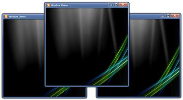

The Window Control can be activated using the property BringToFront(). This method brings the WindowControl to front if there is more than one Window Control.
|
C# |
|
WindowControl window = new WindowControl(); window.BringToFront(); |

Figure 1088: Activated Window Control